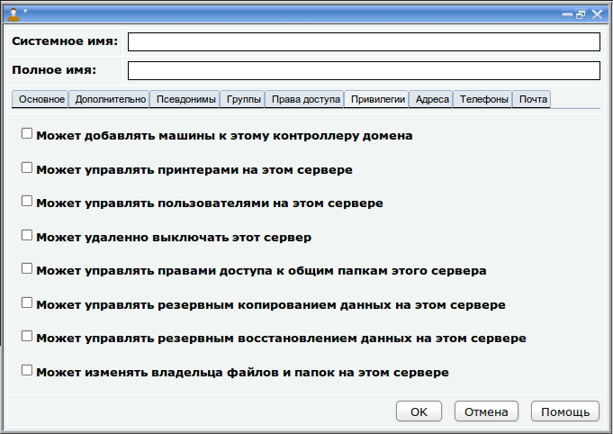

Работа с пользователями и группами
Введение
Работа с пользователями осуществляется в подразделе "Пользователи" раздела "Файловый сервер" панели управления.
Работа с группами пользователей осуществляется в подразделе "Группы пользователей" раздела "Файловый сервер" панели управления.
В базовой конфигурации сервера заведено два пользователя и одна группа.
Пользователь sysadmin считается администратором сервера, который обладает правами, аналогичными root.
Пользователь guest это гостевая учетная запись. Если клиент не
указывает имя пользователя при подключении к серверу, то подключение
выполняется от имени пользователя guest и клиент получает права доступа
к общим папкам, назначенные пользователю guest.
Группа smbusers это стандартная группа, в которую входят пользователи
guest и sysadmin. Если нет необходимости разделять пользователей на
группы, просто указывайте для всех создаваемых пользователей эту группу.
С помощью подразделов "Пользователи" и "Группы" можно добавлять новых пользователей, редактировать и удалять существующих.
Создание учетной записи пользователя
Для создания новой учетной записи пользователя нужно нажать правой
кнопкой мыши по подразделу "Пользователи" и выполнить команду "Новый пользователь" из контекстного меню.

Появится окно параметров пользователя:
Информация о пользователе состоит из основных данных, таких как
"Системное имя" и "Полное имя", а также всех остальных, которые
распределены на закладках: "Основное", "Дополнительно",
"Псевдонимы", "Группы", "Права доступа", "Привилегии", "Адреса", "Телефоны" и "Почта" .
- Системное имя это имя, с помощью которого пользователь будет подключаться к системе.
Системное имя должно указываться на английском языке
- Полное имя это произвольная строка, описывающая пользователя
Эти два поля обязательны для заполнения, все остальные обязательными не
являются, они могут оставаться пустыми, либо заполнятся значениями по
умолчанию.
На закладке "Основное" находятся следующие данные:
- Основная группа -
основная группа пользователя. Пользователь может входить в одну или
несколько групп, одна из которых является основной. Группа выбирается
из списка групп пользователей, которые должны быть предварительно
заведены на сервере
- Фамилия - фамилия пользователя
- Имя Отчество - имя и отчество пользователя
- Пароль - пароль пользователя. Необходимо указать два раза
- Домашний каталог - путь к
домашней папке пользователя. У каждого пользователя существует домашняя
папка. Обычно домашние папки пользователей находятся в папке /home на
сервере. Если значение в этом поле не указано, то автоматически подставляется значение /home/<системное-имя-пользователя>
- Командная оболочка
- путь к интерпретатору командной строки, который будет использоваться
пользователем при подключении к серверу в режиме командной строки.
Обычно используется Bash, не нужно менять это значение
Поля закладки "Дополнительно"
заполняются только если сервер выполняет роль контроллера домена.
Изменять их нужно только в крайнем случае, так как в основном для них
подходят значения по умолчанию.
- Путь к домашнему каталогу
- путь к каталогу, который отображается как Домашний каталог
пользователя в Сетевом окружении Windows. По умолчанию равен каталогу с
профилем пользователя /home/<имя-пользователя>/winprofile. Свой
собственный каталог нужно указывать в формате UNC-пути:
\\Сервер\Имя-общей-папки\путь . В качестве сервера можно указать %N,
что означает - текущий сервер.
- Диск домашнего каталога -
имя диска, который будет автоматически подключаться при входе
пользователя в домен. Этот диск будет отображать содержимое домашнего
каталога пользователя
- Скрипт при загрузке
- путь к файлу скрипта, относительно системной общей папки netlogon,
который будет выполняться при входе пользователя в домен. Скрипт это
обычный командный файл .bat или .cmd.
- Путь к профилю пользователя
- это путь к каталогу, в котором хранится профиль пользователя Windows,
в случае если используются перемещаемые профили. По умолчанию равен
/home/<имя-пользователя>/winprofile .
Подробнее о смысле указанных здесь понятий можно прочитать в разделе "
Организация домена".
На закладке "Псевдонимы" находится список дополнительных имен, от имени которых данный пользователь может подключаться к серверу:
В каждой строке указывается по одному имени. Это является одним из
способов создания имен на русском языке. Допустим, таким образом можно
сделать так, чтобы пользователь "sysadmin" мог подключаться от имени
пользователя "Администратор".
На закладке "Группы" указывается, в какие дополнительные группы входит пользователь (основная группа указывается на закладке "Основное").
Включите флажки напротив нужных групп и отключите напротив ненужных.
На закладке "Права доступа" определяется, какими способами пользователь может подключаться к серверу.
Пользователь может удаленно
подключаться к серверу различными способами: по SSH в режиме командной
строки, через Сетевое окружение Windows по протоколу SMB или через
Интернет по протоколам FTP и WebDAV. Также, если по предварительной
договоренности на сервере включен режим интеграции между системой
управления и контроллером, пользователь может от своего имени может
входить в Панель управления сервером. По умолчанию пользователям
разрешено подключаться к серверу по протоколам SMB и NFS, а в режиме
командной строки и из Интернет им подключаться запрещено. Для
управления возможностью подключения пользователей по различным
протоколам предназначены флажки:
- Запретить удаленный доступ к командной строке сервера - запрещает доступ пользователю по SSH
- Запретить удаленный доступ по протоколу SMB - запрещает доступ к серверу из Windows
- Запретить доступ из Интернет - запрещает доступ по протоколам FTP и WebDAV
Если Вы отключаете флажок "
Запретить
доступ из Интернет", пользователь сможет подключиться с помощью клиента
FTP или WebDAV. При подключении, пользователь попадает в определенную
папку, которую мы называем "
Домашняя папка Интернет". Путь к ней нужно
указать в соответствующем поле, которое находится над флажками. Вы
можете ввести путь вручную или выбрать его с помощью файлового
менеджера, нажав кнопку

.
При нажатии на эту кнопку появится файловый менеджер, с помощью
которого можно найти нужную папку, а при необходимости создать ее и
настроить к ней нужные права доступа. Нужно чтобы пользователь имел
хотя-бы право на чтение своей домашней папки Интернет. О работе с
файловым менеджером и об установке прав доступа к общим папкам читайте
раздел "
Управление данными сервера".
При создании нового пользователя, флажок "Запретить доступ из Интернет"
и поле "Домашняя папка Интернет" скрыты. Предоставить доступ к Интернет
можно только уже созданному пользователю. Следовательно, для того чтобы
предоставить новому пользователю доступ к серверу из Интернет, нужно
сначала создать его локально, сохранить, затем снова открыть окно этого
пользователя и предоставить доступ из Интернет, отключив флажок "
Запретить доступ из Интернет" и указав "
Домашнюю папку Интернет".
После того как пользователю разрешено
подключаться к серверу по определенным протоколам, он получает доступ к
общим папкам сервера и к их содержимому в рамках прав доступа, которые
для этого содержимого определены. Права доступа к общим папкам
назначаются в Файловом менеджере. Для удобства есть кнопка "Запустить
файловый менеджер" прямо в этом окне. При ее нажатии запускается
файловый менеджер, с помощью которого можно настроить права доступа к
нужным папкам и файлам.
Имейте в виду, что прежде чем
настраивать права доступа для нового пользователя, его нужно сохранить,
чтобы он появился в списке пользователей.
Если включен флажок "
Пользователь платформы ЛВА", то данный пользователь также становится администратором панели управления сервером (см. "
Панель управления").
Если на сервере настроена интеграция между системой управления и
файловым сервером (выполняется специалистами компании ЛВА по
предварительной договоренности) и включен флажок "
Пользователь платформы ЛВА", то данный пользователь может входить в Web-интерфейс и администрировать сервер от своего имени.
На закладке "Привилегии" указываются административные привилегии, которыми обладает данный пользователь по отношению к серверу.

Пользователи Windows имеют возможность управлять сервером, используя
различные средства, входящие в операционную систему Windows. Для
выполнения этих действий, пользователь должен иметь соответствующие
права или, как их называют, привилегии. На этой закладке эти привилегии
устанавливаются:
- Может добавлять машины к контроллеру домена - при регистрации компьютера в домене, система спрашивает логин и пароль пользователя, который имеет на это право. Чтобы
пользователь обладал таким правом, у него должна быть установлена эта
привилегия. По умолчанию на это имеют право только пользователи root и
sysadmin.
- Может управлять принтерами на этом сервере - пользователь с такой привилегией может добавлять принтеры на сервер и устанавливать на сервере драйверы принтеров
- Может управлять пользователями на этом сервере
- пользователь с такой привилегией может использовать утилиту Server
Manager для редактирования учетных записей пользователей, заведенных на
сервере
- Может удаленно выключать сервер - название говорит само за себя
- Может управлять правами доступа к общим папкам на этом сервере - может использовать Server Manager для управления доступом к общим папкам, а также для создания новых общих папок
- Может управлять резервным копированием данных на этом сервере
- Может управлять резервным восстановлением данных с сервера
- Может изменять владельца файлов и папок на этом сервере
На закладках "
Адреса" и "
Телефоны"
указывается дополнительная информация о пользователе. База данных
пользователей, хранящаяся в каталоге LDAP может использоваться в
качестве адресной книги, подключаемой к клиенту электронной почты. Эти
поля будут использоваться в адресной книге.
После ввода всех параметров пользователя нужно нажать
OK. Если при
вводе параметров не было допущено ошибок, окно закроется и в раздел
пользователей добавится новый пользователь.
Если настроена
интеграция с почтовым сервером Mystix Collector MX, то появится дополнительная закладка "
Почта".
Эта закладка носит исключительно информационный характер. Если файловый
сервер объединен с почтовым, то при создании пользователя, на почтовом
сервере будет создан почтовый ящик для него. На закладке "
Почта"
показан адрес почтового ящика и путь к этому ящику в файловой системе
почтового сервера. Адрес почтового ящика в данном случае имеет формат
<имя-пользователя>@<имя-домена>.
При изменении имени пользователя или имени домена на файловом сервере,
синхронно с ним будет изменяться и адрес почтового ящика на почтовом
сервере.
Для того чтобы интеграция с почтовым сервером работала правильно,
предварительно необходимо завести на почтовом сервере домен, который по
имени будет совпадать с доменом файлового сервера.
ВАЖНО ! Не нужно менять
средствами самого почтового сервера или его панели управления адреса
почтовых ящиков, которые создаются на почтовом сервере таким способом.
Обратной интеграции не предусмотрено. Почтовый сервер не умеет
взаимодействовать с файловым и не знает как записывать данные в его
каталог. Если вы измените адрес почтового ящика (часть имени
пользователя или часть домена), то он уже не будет соответствовать
имени почтового ящика, который хранится в учетной записи пользователя
на файловом сервере. Все остальные данные почтового ящика, кроме
адреса, редактировать можно.
Это же замечание относится и к имени домена, в котором находятся
почтовые ящики, создаваемые файловым сервером. Не нужно менять его
средствами почтового сервера. Изменяйте имя этого домена на файловом
сервере. При изменении имени домена на файловом сервере, оно
автоматически изменится и на почтовом (также соответственно изменятся
имена всех почтовых ящиков, заведенных в этом домене).
Редактирование параметров учетной записи пользователя
Для редактирования параметров пользователя, нужно развернуть подраздел
"Пользователи" в разделе "Файловый сервер" и щелкнуть левой кнопкой
мыши по нужному пользователю.
Существует альтернативный вариант. Нужно щелкнуть правой кнопкой мыши по пользователю и выполнить команду "Изменить" из контекстного меню.
В результате появится окно параметров пользователей, работа с которым
ничем не отличается от того, что было описано ранее при "
Создании
нового пользователя".
Вас может смутить отсутствие пароля в поле "Пароль". Это не значит что
пароля нет, он просто не отображается и если вы сохраните изменения не
вводя пароль, он не сохранится как пустой, а останется прежним, каким
был до начала редактирования.
При изменении домашней папки пользователя, все данные из прошлой папки
будут перемещены в новую, поэтому не нужно предварительно создавать
новую папку пользователя, это будет сделано автоматически.
При изменение системного имени пользователя домашняя папка автоматически не переименовывается.
Удаление учетной записи пользователя
Для удаления пользователя нужно нажать правой кнопкой мыши на его наименовании и выполнить команду "Удалить" из контекстного меню.
Далее система попросит подтвердить намерение удалить пользователя.
После подтверждения будет удален пользователь и его домашняя папка со
всеми данными.
Создание новой группы
Для создания новой группы пользователей используется подраздел "Группы пользователей" в разделе "Файловый сервер" панели управления.
Чтобы создать новую группу, нужно нажать правой кнопкой мыши по подразделу "Группы пользователей" и выполнить команду "Новая группа" из контекстного меню.
Появится окно параметров группы.
Для каждой группы указывается "Системное имя",
и, на соответствующих закладках указываются пользователи, которые
входят в группу
и привилегии, которые будут иметь пользователи, входящие в эту группу.
Права доступа группы к файлам и папкам указываются с помощью "Файлового
менеджера".
На закладке "Пользователи" включите флажки напротив пользователей, которые должны входить в группу.
На закладке "Привилегии" включите флажки напротив привилегий, которыми должны обладать пользователи, входящие в эту группу.
Пользователи Windows имеют возможность управлять сервером, используя
различные средства, входящие в операционную систему Windows. Для
выполнения этих действий, пользователь должен иметь соответствующие
права или, как их называют, привилегии. На этой закладке эти привилегии
устанавливаются:
- Может добавлять машины к контроллеру домена - при регистрации компьютера в домене, система спрашивает логин и пароль пользователя, который имеет на это право. Чтобы
пользователь обладал таким правом, у него должна быть установлена эта
привилегия. По умолчанию на это имеют право только пользователи root и
sysadmin.
- Может управлять принтерами на этом сервере - пользователь с такой привилегией может добавлять принтеры на сервер и устанавливать на сервере драйверы принтеров
- Может управлять пользователями на этом сервере
- пользователь с такой привилегией может использовать утилиту Server
Manager для редактирования учетных записей пользователей, заведенных на
сервере
- Может удаленно выключать сервер - название говорит само за себя
- Может управлять правами доступа к общим папкам на этом сервере - может использовать Server Manager для управления доступом к общим папкам, а также для создания новых общих папок
- Может управлять резервным копированием данных на этой сервере
- Может управлять резервным восстановлением данных с сервера
- Может изменять владельца файлов и папок на этом сервере
После ввода всех параметров группы нужно нажать OK. Если при
вводе параметров не было допущено ошибок, окно закроется и в раздел групп пользователей добавится новая группа.
Изменение параметров группы
Можно изменить системное имя группы, состав пользователей, у которых
она установлена в качестве дополнительной группы и привилегии, которыми
эта группа обладает.
Для этого нужно открыть окно параметров группы, внести нужные изменения и нажать кнопку OK.
Чтобы открыть окно параметров группы нужно нажать левой кнопкой мыши по наименованию группы в подразделе "Группы пользователей" раздела "Файловый сервер".
Есть и другой способ. Нужно нажать правой кнопкой мыши по наименованию группы и выполнить команду "Изменить" из контекстного меню.
В результате появится окно изменения параметров группы. Приемы работы с этим окном описаны ранее при "
Создании новой группы".
Следует иметь в виду, что при исключении пользователей из группы, они
удаляются из списка дополнительных групп пользователя. Нельзя убрать
основную группу пользователя из окна редактирования параметров группы.
У пользователя обязательно должна быть основная группа, поэтому ее
нельзя удалить, можно лишь изменить ее в окне параметров пользователя
на закладке "
Основное".
После завершения редактирования параметров группы нажмите OK. Окно параметров группы закроется.
Удаление группы
Прежде чем удалять группу, нужно проверить, чтобы она не была установлена ни у одного из пользователей в качестве основной.
Чтобы удалить группу, нажмите правой кнопкой мыши по ее наименованию и выполните команду "Удалить" из контекстного меню.
Система попросит подтвердить намерение удалить группу. После подтверждения группа будет удалена и исчезнет из списка групп.
При удалении группы, пользователи,
которые в нее входят не удаляются, просто группа убирается из списка
дополнительных групп каждого пользователя.